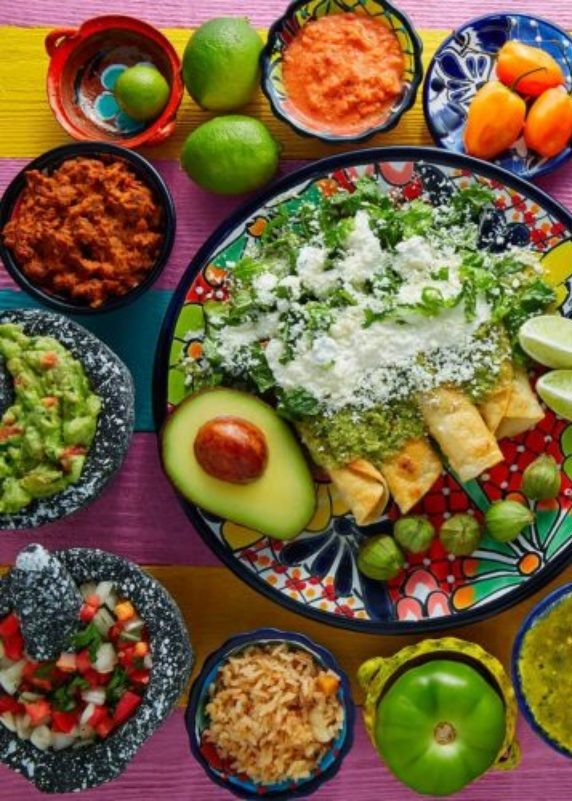
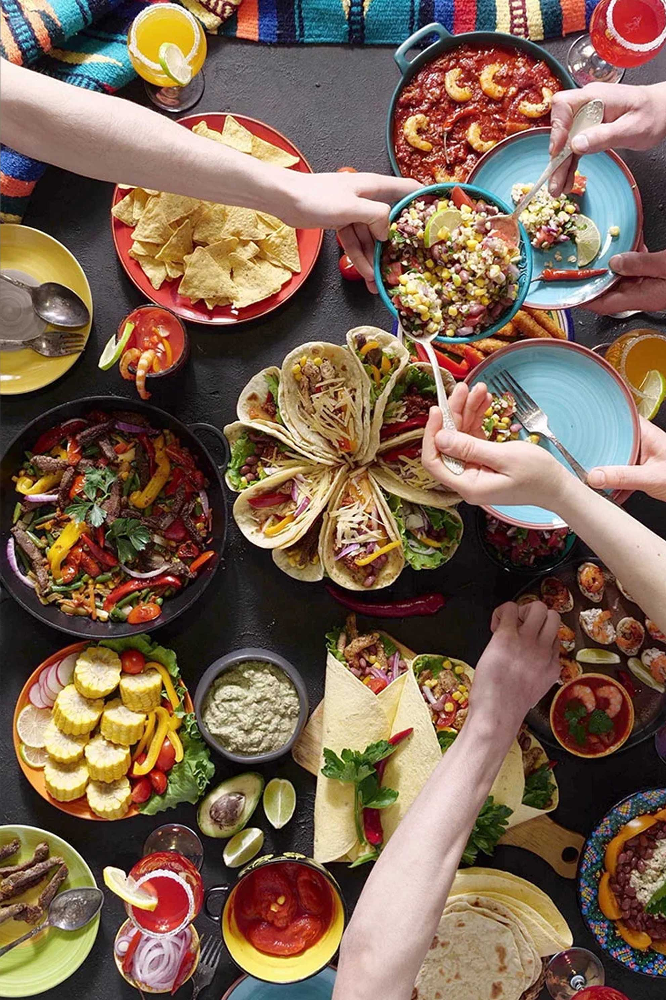
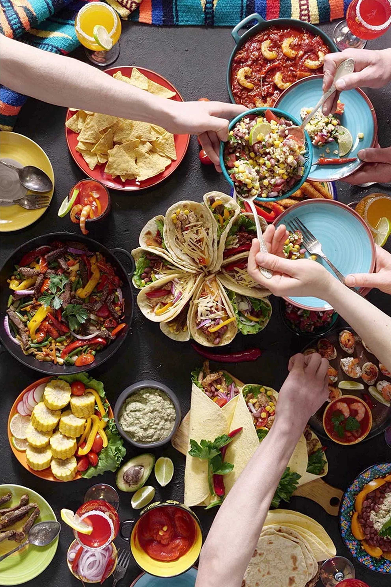

Bienvenido a
PLAFIME
PLAFIME es una pagina diseñada para recomendar y guiar en la preparacion de los mejores platillos Mexicanos tradicionales
Contactar

 

Bienvenido a
PLAFIME es una pagina diseñada para recomendar y guiar en la preparacion de los mejores platillos Mexicanos tradicionales
ContactarPanes tipo bolillo cortado al centro de la miga y untados con frijoles refritos, pollo al chipotle gratinados con queso manchego y acompañados con rebanadas de aguacate.
Desayuno
Pedazos de tortilla de maíz frita, salsa verde, crema de leche, cebolla, queso blanco, y opcionalmente huevo o pollo deshebrado.
Desayuno
Combinación de huevos revueltos con tomate, cebolla y chile picados y fritos .
Desayuno
La birria es un potaje hecho con carne de borrego, chivo o res, tradicionalmente horneada en un hoyo en la tierra
Desayuno
Huevos servidos al estilo de los huevos rancheros, pero uno de los huevos se cubre de salsa verde y el otro de salsa roja, separados por una ‘pared’ de frijoles o chilaquiles.
Desayuno
Tortilla de maíz bañada en alguna salsa, puede ir acompañada o rellena de carnes (pollo, pavo, res) o de queso. Se sirve con cebolla fresca picada o en rodajas, lechuga, crema de leche y queso.
Desayuno
Carne adobada, asada, servida en finas rebanadas sobre pequeñas tortillas de maíz, la carne puede ser una combinación de carne de cerdo y carne de ternera o puerco.
Comida
Consiste principalmente en una salsa de una gran variedad de ingredientes vertida sobre piezas de pollo
Comida
Chile poblano, relleno de un guisado de picadillo y frutas cubierto con crema de nuez de Castilla (nogada), hojas de perejil y granos de granada.
Comida
Este plato típico de la cocina mexicana suele servirse frío y acompañarse con tostadas de maíz, aguacate y limones frescos.
Comida
Rajas poblanas cremosas con elote y fajitas de jugoso pollo.
Comida
Deliciosos y tiernos nopalitos untados con frijolitos refritos y la receta original de tinga de atún.
Comida
Plato a base de carne de borrego originalmente (aunque también se prepara con carne de res), adobado con una preparación a base de algunos tipos de chiles, condimentos y sal.
Cena
Deliciosas enchiladas rellenas de queso Oaxaca bañadas en salsa verde con chorizo.
Cena
Tacos de birria bañados en salsa de chiles y especias atiborrado de queso, doraditas por fuera y suaves por dentro.
Cena
Caldo hecho a base de una mezcla de chiles, maíz y carne de puerco. Acompáñalo con cebolla, lechuga, rábano, orégano y tostadas de maíz con crema.
Cena
Platillo que se prepara alternando capas de tortilla de maíz sofritas con capas de salsa de jitomate, rajas de chile poblano, granos de maíz, rajas de cebolla, crema ácida y queso Oaxaca o queso Chihuahua.
Cena
Tortilla gruesa ovalada y larga, preparada con masa de maíz, sobre la cual se coloca, a manera de complemento, chicharron prensado
Cena
Bizcocho bañado con tres tipos de leche: leche evaporada, crema de leche y leche condensada.
Postre
Pan tostado, o añejado hasta que se deshidrata, cortado en rodajas puestas a cocer junto con trozos de plátano, pasas, nueces, guayaba y cacahuates, cubierto con jarabe de piloncillo y queso de mesa rallado.
Postre
Masa a base de harina de trigo cocinada en aceite, pueden tener formas de bastón, en lazos o rulos y comunmente relleno chocolate como complemento
Postre
Postre mexicano hecho a base de harina de trigo, nata, azúcar y canela. Son baratas y fáciles de hacer, por solo llevar un poco de nata o crema de vaca fermentada, harina y azúcar
Postre
Originario de la ciudad de Guadalajara, postre que mezcla ingredientes europeos con mexicanos como leche, azúcar, huevos, canela y vainilla.
Postre
Empieza tu día comiendo un desayuno muy Mexicano: Chilaquiles verdes.
Ver recetaEste plato típico de la cocina mexicana suele servirse frío y acompañarse con tostadas de maíz, aguacate y limones frescos.
Leer receta
Pedro de Alba SN, Niños Héroes, Ciudad Universitaria
plafime@gmail.com
+81123410921
Proyecto para la Facultad de Ingenieria Mecanica y Electrica Enero-Julio 2023